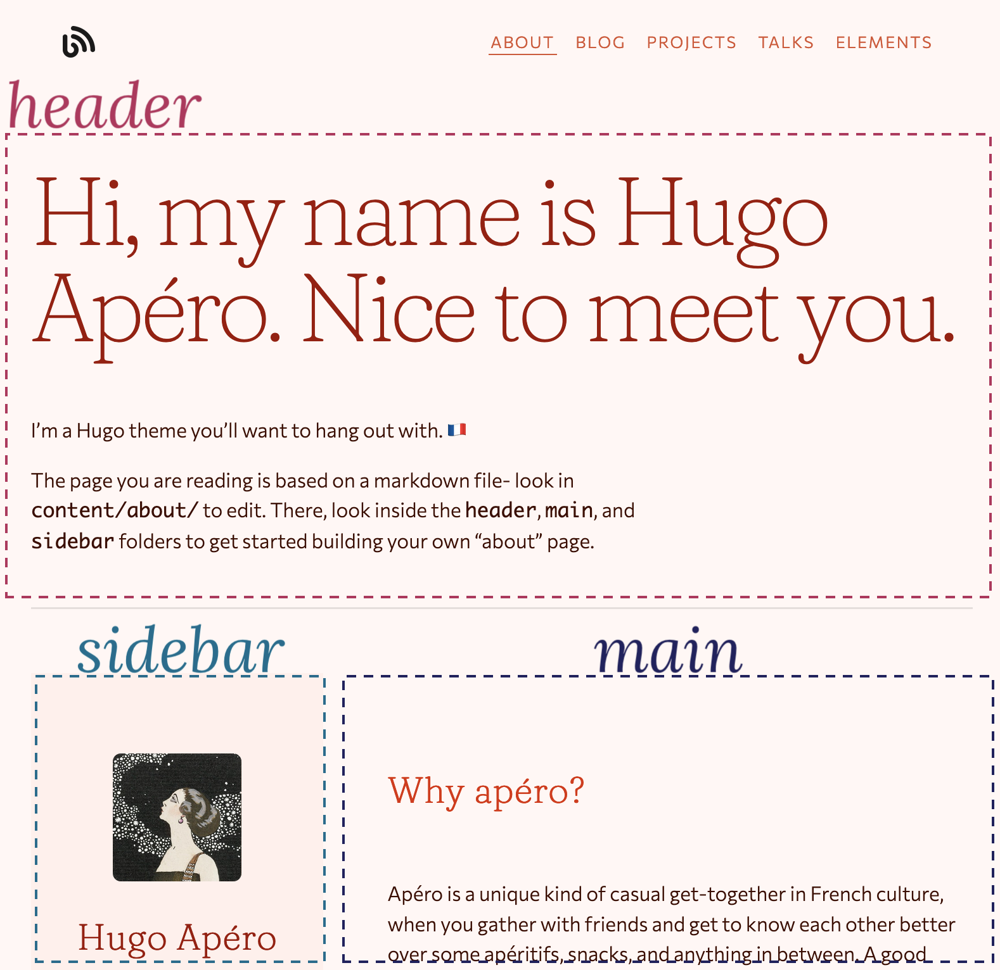

Customize your about page
Use your about page to tell visitors more about you. More stable than a twitter page, but less frozen than a resume or CV.
By Alison Hill in evergreen
March 14, 2021
There are three main sections to the about page.

The header is on top, and includes a headline and subheadline. This section is optional.
The sidebar, which can appear on either the left or the right, is a narrow column with the option to include an avatar, audio file, social icons, and a quick list of links.
The main section is the wide column that appears next to the sidebar. It allows you to add an intro and outro, with featured content sandwiched between. Featured content can be scoped in a few different ways: you can control which content sections of your site get featured, how many you want to feature on the about page, and whether to use the most recent content or filter based on a featured: true flag added to the YAML of individual content pages.
So, where to start?
Set up your about page sections
Start customizing your Hugo Apéro about page by opening up content/about/_index.md. When you open this file, you’ll see a long-ish section of YAML with a series of key-value pairs fenced in by three dashes (---). There is no content on this page below the YAML.
The underscore in the filename is important, and so is the filename, so don’t change this! But do focus on changing the YAML values.
The title and description fields are important for populating the metadata for this page, but changing these two fields may not change anything you see right away. But please do it anyway!
---
title: "About"
description: |
A website template for Hugo developed by RStudio & Formspree and available for free.
---
Next, decide if you want to show the header or not, and whether you want to show the sidebar on the left or the right:
---
show_header: true
sidebar_left: true
---
Close content/about/_index.md- you are done in there for now.
Set up the header
Open up content/about/header/index.md to customize, if you are showing it. Here is the full YAML:
---
## Configure header of page
text_align_right: false
show_title_as_headline: false
headline: |
Hi, my name is Hugo Apéro. Nice to meet you.
---
If you don’t want to set a custom headline, and would like to use your title from content/about/_index.md instead as the headline, set show_title_as_headline: true.
Use the text below the YAML to fill in your subheadline. You may use markdown formatting and emojis.
Set up the sidebar
Open up content/about/sidebar/index.md to customize. This is another file where you’ll see a long-ish section of YAML with a series of key-value pairs fenced in by three dashes (---). There is no content on this page below the YAML.
Add your info and avatar
Add your name as the author and a role. To add an avatar:
- Save an image with the word
"avatar"in the filename to thecontent/about/sidebar/folder (so it should be alongside theindex.mdfile named, for example,alison-avatar.jpgoravatar-haifa.png), and - Then, select a shape for the image to display in the sidebar (one of: circle, square, rounded) in the YAML of
content/about/sidebar/index.md(as shown below).
---
## Configure sidebar content in narrow column
author: "Hugo Apéro"
role: "A Hugo theme"
avatar_shape: rounded # circle, square, rounded, leave blank to exclude
---
If you don’t want to feature an avatar image, leave this key blank in your YAML.
Add social links & audio
You may decide to show your social links here and an audio link. To show an audio link, you need to do four things:
- Record an
.m4aaudio file locally, - Name the file with the word
"audio"in the filename (soalison-audio.m4aoraudio-haifa.m4a, for example), - Save this file in your
content/about/sidebar/folder, and - Add an audio link label in the YAML of
content/about/sidebar/index.md(as shown below).
---
show_social_links: true # specify social accounts in site config
audio_link_label: "How to say my name" # leave blank to exclude
---
If you don’t want to include an audio link, leave this key blank in your YAML.
Add additional links
Finally, you may add a list of links.
---
link_list_label: "Interests" # bookmarks, elsewhere, etc.
link_list:
- name: Paris
url: https://en.wikipedia.org/wiki/Paris
- name: Pastries
url: https://en.wikipedia.org/wiki/Pastry
- name: People
url: https://en.wikipedia.org/wiki/People
---
Set up the main section
Open up content/about/main/index.md to customize. You can add a title, intro, and outro to frame out this section. The meat of this section is the featured content, which pulls from the rest of your website to give visitors a glimpse of what else there is to read.
Here, you can choose the number of featured items per section to show.
---
number_featured: 1 # pulling from mainSections in config.toml
use_featured: false
---
If you want to limit the sections here, open up your site’s config.toml file and find the mainSections key:
[params]
<!--snip snip-->
mainSections = ["blog", "project", "talk"]
By default, the theme will select the most recent content pages to show. If you’d prefer to control this and flag individual pages to feature instead, set use_featured: true and add featured: true to each page (make sure the page is in one of the mainSections you selected too!).
Finally, you can highlight some featured categories of content; set to 0 to exclude this section. The theme chooses the categories based on number of pages in that category, so if you set to 1 only your most used category will show up.
---
number_categories: 3 # set to zero to exclude
---
These categories show up as clickable buttons above the outro.
Sharing image for the about page
The about page will default to your site’s default sharing image, set up in your config.toml file.
[params]
<!--snip snip-->
# Default image for social sharing and search engines.
# Place image file in `static` folder and specify image name here.
sharing_image = "/img/papillons.jpg"